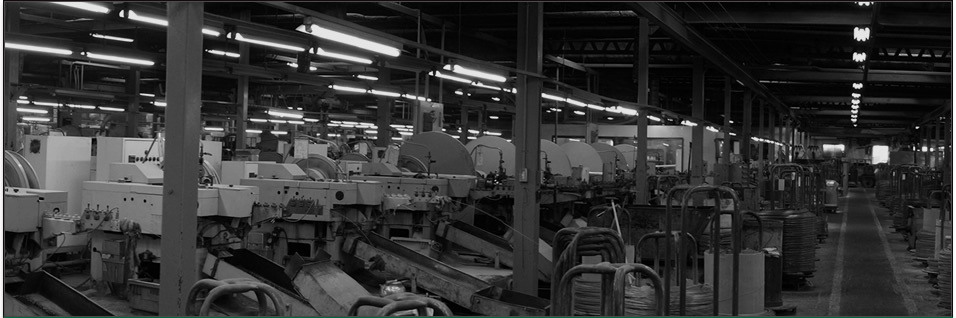
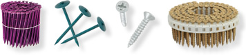

釘・ねじの製造
線材を切り、頭を据え、先端を尖らせる。工程そのものは単純でも、抜けにくさと打ちやすさを両立させる寸法と硬さの兼ね合いは製品ごとに異なります。（公財）日本住宅・木材技術センターの認定品である接合金物用釘 ZN90 なども手がけています。
SINCE 1938
釘とねじ、そして木造住宅用の建築金物。KN村田産業がつくるのは、完成した家では目に触れない部品ばかりです。それでも柱と梁をつなぎ、屋根を留め、住まいの安全を最後に受け持つのはこの一本です。1938年の創立から、線材を加工する技術だけを続けてきました。

1938年
創立
83億円
年商高（2022年度決算）
163名
従業員数（2023年11月現在）
2工場
久喜工場・杉戸工場
WHAT WE MAKE
釘・ねじの製造と、木造住宅用建築金物の製造。この二つが事業の柱です。金物には自社の防錆処理を施しています。

線材を切り、頭を据え、先端を尖らせる。工程そのものは単純でも、抜けにくさと打ちやすさを両立させる寸法と硬さの兼ね合いは製品ごとに異なります。（公財）日本住宅・木材技術センターの認定品である接合金物用釘 ZN90 なども手がけています。
柱と梁、土台と柱をつなぐ金物です。地震のとき、木と木が離れないように留めておくのがこの部品の仕事にあたります。カナイグループとして、企画・開発から建築現場に届けるまでを一貫して担っています。
六価クロムを使わない防錆処理です。建築金物は壁の内側や床下に入ったまま何十年も動かせません。だからこそ、施工後に手を入れられない前提で錆に備えます。
PROCESS
線材が入ってきてから、現場に届く一本になるまで。工程の順に並べています。
コイル状に巻かれた線材が届きます。太さと材質は、これからつくる製品によって決まります。
切断し、頭を据え、先端をつくる。製線機が連続して打ち出していく工程です。
用途に応じて防錆処理や着色を施します。建築金物には自社のデュラルコートを用います。
自社製品と輸入品の双方を検査します。寸法だけでなく、規格に適合しているかを確かめます。
商品の販売とお問い合わせは、カナイグループの株式会社カナイが窓口として対応します。
GROUP
カナイグループは、木造住宅の木と木をつなぐ建築金物を、企画・開発から建築現場に届けるまで一貫して担っています。KN村田産業はそのなかで、釘・ねじと金物の製造を受け持ちます。
株式会社カナイグループ
グループの統括。
株式会社カナイ
商品の販売とお問い合わせの窓口。
株式会社関西リベット・サービス
グループ会社。
株式会社シンエイ
グループ会社。
台湾金井企業股份有限公司
台湾のグループ会社。
COMPANY
商品の販売およびお問い合わせは、カナイグループの株式会社カナイが承ります。採用に関するお問い合わせは本社総務部までご連絡ください。
本社代表／Fax. 072-447-9105
採用に関するお問い合わせ Tel. 072-439-5424（総務部）